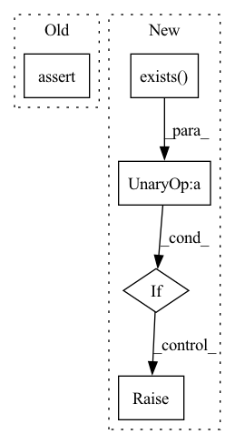

Pattern ID :37050
Before Change
supported_formats = (".json", ".yml")
assert os.path.exists(root)
assert meta_fmt in supported_formats, f"Only {supported_formats} are supported formats"
self._root = rootAfter Change
supported_formats = (".json", ".yml")
if not os.path.exists(root) :
raise FileNotFoundError(root)
assert meta_fmt in supported_formats, f"Only {supported_formats} are supported formats"
self._root = rootIn pattern: SUPERPATTERN
Frequency: 3
Non-data size: 5
Instances Fragment ID: 105517278
Project Name: oxid15/cascade
Commit Name: 2dbb1d99121d6d675c4d43bef39ec97dd2594ba3
Time: 2022-08-09
Author: villeman.5@yandex.ru
File Name: cascade/meta/meta_viewer.py
M Class Name: MetaViewer
N Class Name: MetaViewer
M Method Name: __init__(4)
N Method Name: __init__(4)
M Parent Class:
N Parent Class:
M File Name: cascade/meta/meta_viewer.py
N File Name: cascade/meta/meta_viewer.py
M Start Line: 44
M End Line: 44
N Start Line: 44
N End Line: 46
Before Change
if os.path.getsize(weights) < 5E6: // weights < 5MB (too small), download failed
os.remove(weights) // delete corrupted weightsfile
assert os.path.exists(weights), msg // download missing weights from Google Drive
After Change
r = os.system("curl -f " + url + " -o " + weights)
// Error check
if not (r == 0 and os.path.exists(weights) and os.path.getsize(weights) > 1E6) : // weights exist and > 1MB
os.system("rm " + weights) // remove partial downloads
raise Exception(msg)
Fragment ID: 105517279
Project Name: nightsnack/yolobile
Commit Name: ef133382c5ac2c1b5704b113c25c5cbf4786a7ce
Time: 2019-12-06
Author: glenn.jocher@ultralytics.com
File Name: models.py
M Class Name: AnonimousClass
N Class Name: AnonimousClass
M Method Name: attempt_download(1)
N Method Name: attempt_download(1)
M Parent Class:
N Parent Class:
M File Name: models.py
N File Name: models.py
M Start Line: 440
M End Line: 467
N Start Line: 439
N End Line: 465
Before Change
elif platform.system() == "Darwin":
mkl_lib_name = "/usr/local/lib/libmkldnn.dylib"
assert os.path.exists(mkl_lib_name), "Not found onednn, please install it by the command "brew install onednn@2.2.3""
extra_flags = f" -lmkldnn "
mkl_op_dir = os.path.join(jittor_path, "extern", "mkl", "ops")After Change
"/usr/local/lib/libmkldnn.dylib", // x86_64
"/opt/homebrew/lib/libmkldnn.dylib", // arm64
]
if not any([os.path.exists(lib) for lib in mkl_lib_paths]) :
raise RuntimeError("Not found onednn, please install it by the command "brew install onednn@2.2.3"")
extra_flags = f" -lmkldnn "
mkl_op_dir = os.path.join(jittor_path, "extern", "mkl", "ops") Fragment ID: 105517277
Project Name: jittor/jittor
Commit Name: ebb07a1efa3997627eb4f1e47202e7efad32c622
Time: 2021-06-11
Author: jittor@JittordeMacBook-Pro.local
File Name: python/jittor/compile_extern.py
M Class Name: AnonimousClass
N Class Name: AnonimousClass
M Method Name: setup_mkl(0)
N Method Name: setup_mkl(0)
M Parent Class:
N Parent Class:
M File Name: python/jittor/compile_extern.py
N File Name: python/jittor/compile_extern.py
M Start Line: 105
M End Line: 106
N Start Line: 105
N End Line: 111